|
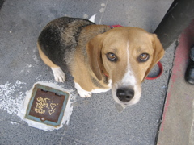
Claude Alley |
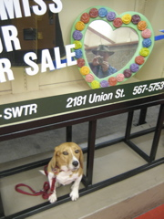
Union Square Garage |
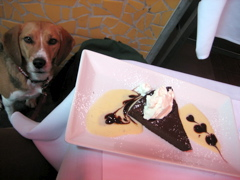
Cafe Bastille |
|
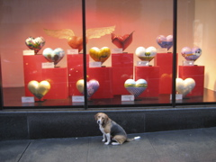
Heroes and Hearts 2008 |
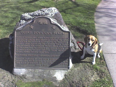
Cotati historical marker |
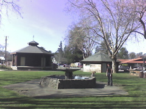
Cotati plaza |
|
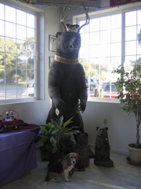
Boonville Beer |
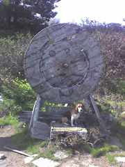
Step Right Up to the Wheel |
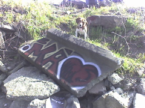
Albany bulb graffiti |
|
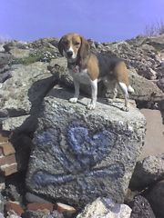
Albany bulb graffiti |
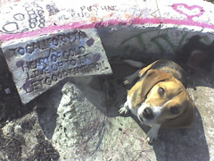
Heart of Gold |
Jan. 30 2018 |